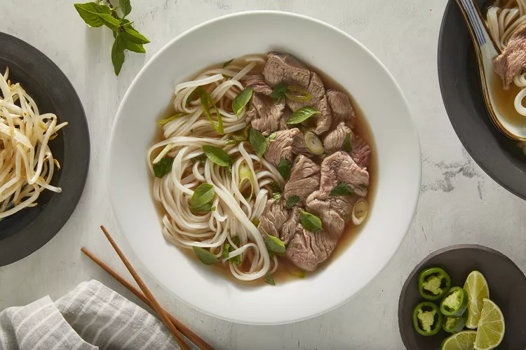

Recipe for Pho

Description
Authentic, Vietnamese pho soup is all about the broth! Beef bones, fish sauce, star anise, and ginger simmer for at least 6 hours, creating a complex, aromatic broth that may not be quick, but it's certainly delicious. The flavorful broth is ladled over rice noodles and thinly sliced beef and topped with fresh garnishes.
Ingredients
-
5 slices of fresh ginger
-
1 tablespoon of salt
-
2 pods star anise
-
2 1/2 tablespoons of fish sauce
-
4 quarts of water
-
1 (8 ounce) package dried rice noodle
- 1 1/2 lbs of beef top sirloin (thinly sliced)
- 1/2 cup chopped cilantro
- 1 tablespoon of green onion
- 1 1/2 cups of bean sprount
- 1 bunch Thai Basil
- 1 medium lime, cutinto 4 wedges
- 1/4 cup hoisin sauce
- 1/4 cup sriracha sauce
Directions
- Preheat the oven to 425 degrees F
- Placebeef bones on a baking sheet and roast in the preheated
oven until browned, about 1 hour
- Place onion halves on a second baking sheet and roast on
another rack until blackened and soft, about 45 minutes.
- Transfer beef bones and onion halves to a large stockpot. Add ginger,
salt, star anise, fish sauce, and 4 quarts of water; bring to a boil. Reduce heat
to low and simmer for 6 to 10 hours. Strain the broth into a saucepan and set aside
- Place rice noodles in a large bowl filled with room temperature water. Let soak for 1 hour. Drain.
- When noodles have soaked for 1 hour, heat up the reserved broth by bringing it to a simmer.
-
Divide noodles among 4 serving bowls; top with sirloin, cilantro, and green onion. Ladle
hot broth over the top. Stir and let sit until beef is partially cooked and no longer pink,
1 to 2 minutes.
-
Serve with bean sprouts, Thai basil, lime wedges, hoisin sauce and chile-garlic sauce on the side.